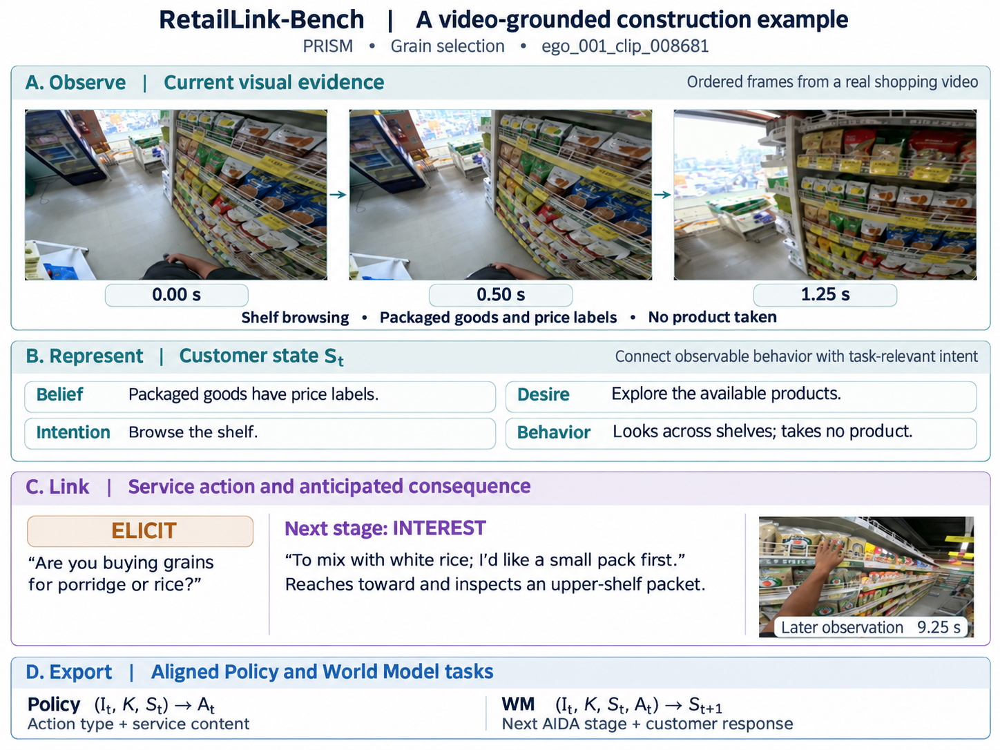

RetailLink-Bench
A construction pipeline links ordered observations, structured customer states, service actions, and reference outcomes across four data sources.
ROSA connects sequence-based customer-state modeling, action-conditioned outcome prediction, and service selection. Its Retail Interaction System (RIS) uses a Policy and a World Model to compare candidate services—including waiting—before selecting an action.
ROSA stands for Retail Outcome-aware Service Assistance. Related project: PIWM
Framework schematic · Illustrative interface, not a live system output.
Proactive retail assistance must interpret unspoken needs and choose useful services before an explicit request—while avoiding interruptions to independent exploration.
ROSA proposes a shared state–action–outcome interface. Its Retail Interaction System (RIS) uses a Policy to propose candidate service actions, a World Model to predict a purchasing stage and behavioral response for each action, and the same Policy to select among action–outcome pairs. Waiting remains an explicit option.
A construction pipeline links ordered observations, structured customer states, service actions, and reference outcomes across four data sources.
A shared interface connects service selection with action-conditioned prediction of customer responses.
Role-specific assessment and revision create accepted targets for separate Policy and World Model updates.
ROSA decomposes proactive assistance into three linked tasks. The Policy proposes candidates, the World Model forecasts candidate-specific outcomes, and the same Policy selects among the resulting pairs.
Ordered video observations are organized into a structured representation of customer context.
The World Model predicts the customer’s next AIDA purchasing stage and descriptive behavioral response, conditioned on a service.
The Policy proposes candidate services, then selects among them using their predicted action–outcome pairs.
Role-specific verifiers assess Policy action/content and World Model AIDA/response drafts. Failed drafts receive feedback and revision; accepted generations become targets for separate LoRA updates.
The manuscript reports point-estimate gains over supervised RIS (RIS-Sup) for both Policy and World Model macro-F1 in each domain.
+3.93 percentage points · RIS-Sup → RIS-VGSI
+3.72 percentage points · RIS-Sup → RIS-VGSI
n = 111 · both labels must match
| Evaluation domain | Policy · RIS-Sup | Policy · RIS-VGSI | World Model · RIS-Sup | World Model · RIS-VGSI |
|---|---|---|---|---|
| PRISM | 17.56 | 21.49 | 41.61 | 43.45 |
| RetailVid | 11.16 | 13.61 | 51.20 | 53.25 |
| SIMMC 2.1 | 27.79 | 28.64 | 19.92 | 20.18 |
| VOGUE | 21.15 | 22.40 | 32.54 | 36.26 |
RetailLink-Bench organizes video and shopping-dialogue examples into linked customer states, service actions, and outcome targets for separate Policy and World Model tasks.
Real retail video observations provide visual evidence of customer activity and product interaction.
Generated retail scenarios provide structured examples for service and outcome tasks.
Adapted shopping-dialogue data supplies conversational context and service references.
Adapted multimodal shopping conversations contribute dialogue and customer-response examples.

Browse ten synthetic RetailVid cases. Each pairs a silent video with an observed customer state, a given service action, and its annotated reference outcome.
No audio · Synthetic retail video
English summaries of the dataset annotations are shown for readability. These are references, not live model predictions or verified intervention effects.